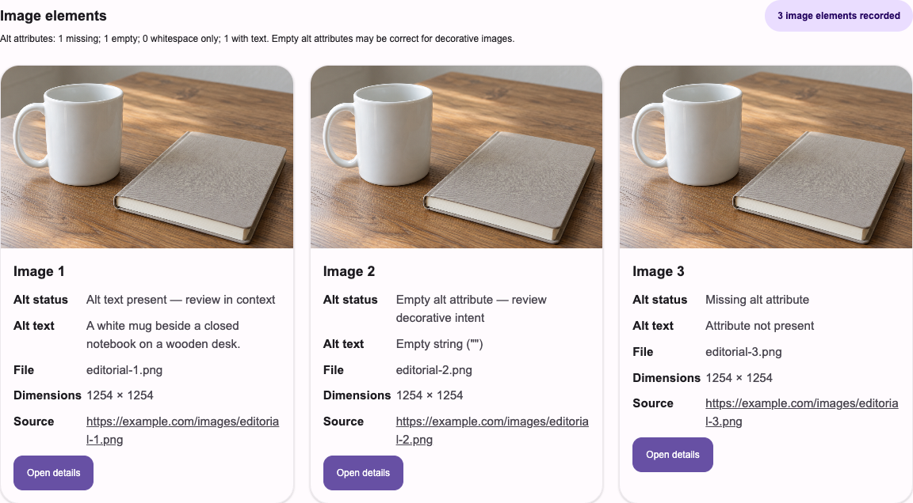

Editorial copy review
Check whether the words fit the picture and the surrounding story.
A Chrome extension for thoughtful image reviews
Review webpage images and their alt text together—without opening developer tools.
Download A11y ChatsVersion 2.0.0 · ZIP download · Install locally in Chrome
Read the release notesSee what is there, what is empty, and what is missing.

Made for a closer look
Review the alt attribute recorded for each image element, even when different elements use the same picture. Open its details for a larger preview and more context.
An empty alt attribute can be right for a decorative image. A11y Chats shows the evidence so you can make that decision in context—it does not score your writing.
Check whether the words fit the picture and the surrounding story.
Bring a clear view of each image and its recorded alt text to conversations with editors and content teams.
Spot missing attributes and review whether an empty value is intentional before the page goes live.
A simple review workflow
Visit the webpage you want to review and select A11y Chats in Chrome’s toolbar.
Keep the source tab active while it checks images and eligible scrollable components. Stop early whenever you need to.
Review the report in its own tab. Open image details, move between images, and inspect page and social metadata.
A scan includes image elements already in the main page, including offscreen images, and explores eligible horizontal and vertical scrollable components. It keeps up to 500 image records within a bounded scan. Stopped or limited scans explain their partial coverage.
Some content is outside that view, including iframe and shadow-root content, CSS background images, and slides that have not appeared in the page yet. The report is evidence for your review, not an accessibility grade or a screen-reader simulation. Image previews may contact their original hosts.
Read the full coverage detailsStart with a local install
This early release is installed from a ZIP file, using Chrome’s extension settings. It is not yet available in the Chrome Web Store.
Get the version 2.0.0 ZIPchrome://extensions in the address bar and turn on Developer mode.manifest.json. Pin A11y Chats from Chrome’s Extensions menu for easy access.Looking ahead
The ZIP download above is available now. We plan to add Chrome Web Store installation so you can install A11y Chats without enabling Developer mode or loading an unpacked folder.